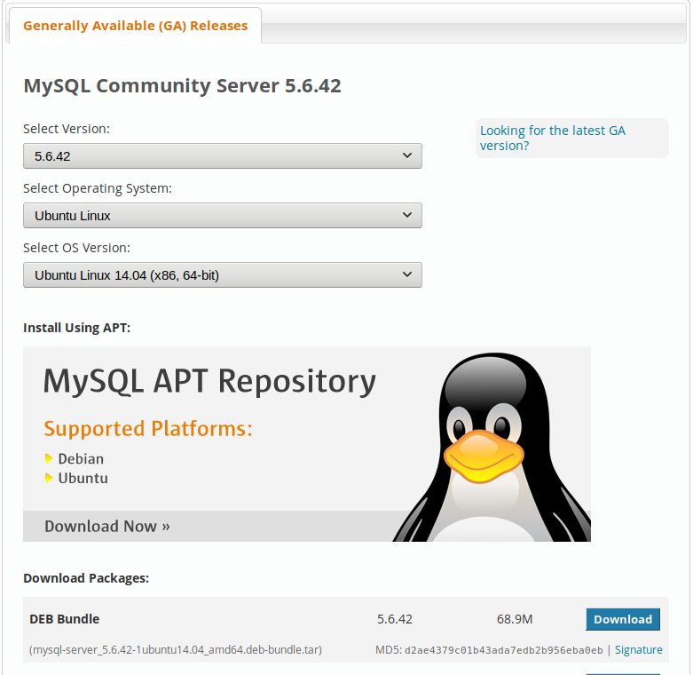
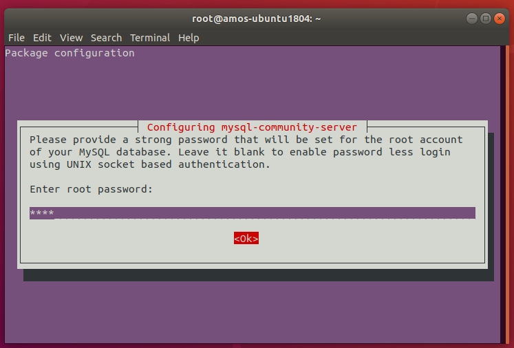
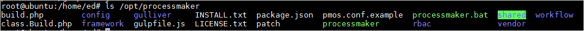
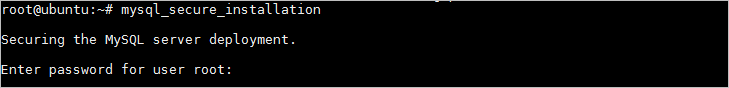
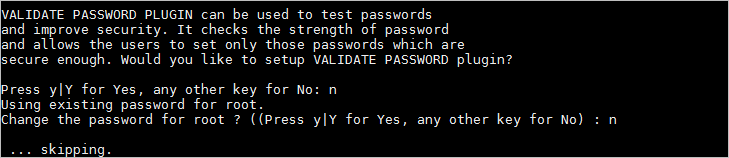
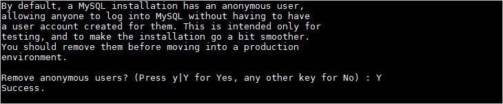
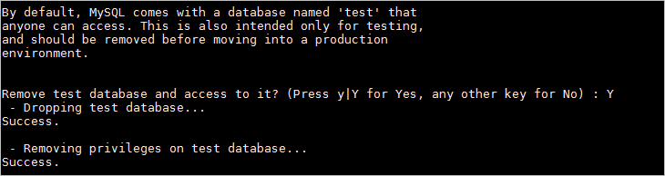
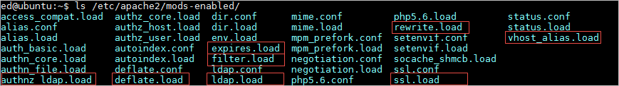
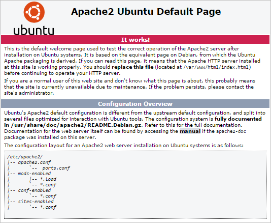

- Overview
- Step 1: Install MySQL
- Step 2: Install PHP and Apache
- Step 3: Configuring PHP Settings
- Step 4: Download & Extract ProcessMaker
- Step 5: MySQL Configuration
- Step 6: Configure Apache
- Step 7: Setting up ProcessMaker
- Step 8: Additional Configuration
- Errors during Installation
Overview
| Note: This platform is not officially supported by ProcessMaker and has NOT been tested by ProcessMaker QA department. |
Follow these instructions to install ProcessMaker 3.3.X on top of a LAMP (Linux, Apache, MySQL, PHP) stack in Ubuntu 18.04 LTS (Bionic Beaver).
ProcessMaker 3.3 is not compatible with PHP 7.2 in the Ubuntu 18.04 repository, so PHP 7.1 needs to be installed from a third-party repository. ProcessMaker 3.3 also has not been tested with MariaDB 10.1, so MySQL 5.6 needs to be downloaded from Oracle's website.
Before installing, it is recommended to first check the Installation Requirements. After installing, see Additional Server Configuration.
Step 1: Install MySQL
To get MySQL 5.6, go to https://dev.mysql.com/downloads/mysql/5.6.html#downloads and download the tar file for MySQL 5.6 in Ubuntu 14.04. Then decompress it.

If using the command line, it can be downloaded and unpacked in this manner:
Then, install the mysql .deb packages which you want to install. To install all of them:
There will be errors about missing dependencies. To resolve these dependencies and finish the installation, issue the command:
When MySQL is being installed, a dialog box will appear asking for a new root password for MySQL.

Enter a password and select the option OK. Then enter the same password a second time in the next screen to confirm it.
Then, Verify that MySQL is correctly configured as a service:

(Press q to quit.)
Then, configure MySQL to turn off MySQL STRICT mode, which is enabled by default in MySQL 5.6.6 and later. Also, make sure that ONLY_FULL_GROUP_BY mode is not enabled, which is the default in MySQL 5.7.5 and later.
First, login to MySQL and verify the current settings for sql_mode:
Once inside MySQL, issue the following command:
The sql_mode should not include NO_ENGINE_SUBSTITUTION, STRICT_ALL_TABLES, STRICT_TRANS_TABLES or ONLY_FULL_GROUP_BY settings. If any of those settings are included, then copy the current sql_mode settings, but exclude those four. Then, exit MySQL:
Then, edit the file /etc/mysql/conf.d/mysql.cnf to change the sql_mode:
Under the [mysqld] section, add the sql_mode settings which don't include the above four settings which aren't allowed. In this example, there are none, so set:
[mysqld] section doesn't exist, then it needs to be created. If sql_mode is placed under the [mysql] section then it will cause an error.Then, exit nano by pressing CTL and x simultaneously and press y to the question asking if the changes should be saved.
Then, restart the mysql service for new configuration to take effect:
Step 2: Install PHP and Apache
Add Ondřej Surý's PHP repository:
Press ENTER at the question whether to continue adding the repository.
Then install Apache 2.4 and PHP 7.1 with the following command:
Install PhpMyAdmin
phpMyAdmin can be installed to easily view the MySQL databases used by ProcessMaker inside a web browser.
First, verify that the "universe" repository is in your /etc/apt/sources.list file. If not, edit the file:
Add "universe" to the end of the list of repositories in a line which is similar to the following:
(Your URL and the list of repositories may be different, but make sure that it contains at least "bionic" and "universe".)
Then, update the list of available packages from the repositories:
Then, install PhpMyAdmin:
If asked which web server PhpMyAdmin should use, press the space bar to select "apache2":

Select whether to configure the database with the dbconfig-common package. In most cases, it is easier to select Yes:

When asked for a password to create the MySQL databases, enter the MySQL root password:

Then, enter a password which can be used to access the PhpMyAdmin web application:

Reconfirm that password by entering it a second time.
Step 3: Configuring PHP Settings
The default configuration of PHP should be able to run ProcessMaker, however, check the following settings if PHP's configuration file php.ini has been modified.
Edit PHP 7.1's configuration file php.ini:
Search for the following lines and edit them using the following configurations:
It is also recommended to set the date.timezone to a your time zone, especially if using timer events in the Enterprise Edition. See this list of supported time zones.
Note: After installation, the same time zone should be set in the ProcessMaker interface by going to Admin > Settings > System and setting the Time Zone (or in the env.ini file).
After editing the php.ini file, save the changes in Nano by pressing CTL+X and pressing y when asked whether to save the changes.
Step 4: Download & Extract ProcessMaker
Go to ProcessMaker's SourceForge page and download a recent tarball of ProcessMaker, which should be named processmaker-X.X.X.X-community.tar.gz.
If downloading from the command line, the wget command can be used to obtain the ProcessMaker code:After the download has finished, decompress the tarball in the directory where ProcessMaker will be installed. ProcessMaker can be installed in any directory which is not publicly accessible to the internet (so do NOT install it in /var/www), but it is generally installed in /opt, since it is an optional program which doesn't come from the standard repositories:
Verify that ProcessMaker was correctly decompressed:
The processmaker directory should contain the following contents:

Set file permissions
Then, issue the following commands with sudo, so that ProcessMaker can access the necessary files when run by the Apache server:
Step 5: MySQL Configuration
Set up a secure installation of MySQL, by removing the "test" database and the remote connections, with the following command:
Follow the wizard to secure MySQL:
Here it is necessary to enter root password:

In the next part, it is possible to change the root password if wanted.

Then, remove anonymous users by choosing "Y":

In this part, the prompt will ask about disabling root login. Answer Y to disable remote access.
Then, it is possible to remove the default "Test" database:

Finally, reload privileges tables:
Once done, restart the "mysql" service.
Set a user other than root
The MySQL "root" user should already have all the necessary privileges to setup the ProcessMaker databases. If planning on using a MySQL user other than "root" to set up the ProcessMaker databases, then follow the instructions below to grant a MySQL user superuser privileges to create and update databases.
Login to MySQL:
Enter the root password for MySQL.
Once in MySQL, give the user which will be running ProcessMaker superuser privileges to create create and modify MySQL databases:
Replace USER with the name of your MySQL user and PASSWORD with the password for that user. (If that user doesn't already exist, he/she will be automatically created with the above grant command. If you are running ProcessMaker on a different server than your MySQL server, then replace localhost with the domain name or IP address of the server where ProcessMaker is located.
Exit MySQL:
MySQL Configuration Issues
Setting the root Password
If MySQL doesn't have a root password, set one for better security:
If you have forgotten the root password, see these instructions to reset it.
Starting as a Service
When logging into MySQL, if the following error message appears:
Then, MySQL needs to be started as a service:
If MySQL was installed from Oracle's MySQL repository, it should automatically start as a service on bootup. If not, then use use update-rc.d to add it as a service:
Step 6: Configure Apache
Copy the sample ProcessMaker configuration file (which is named pmos.conf.example) to Apache's list of available sites:
Then edit the pmos.conf file to fit your environment:
your_ip_address and your_processmaker_domain with the IP address or domain name used by your ProcessMaker server. And replace /opt/processmaker with your installation directory:
Replace your_ip_address with the IP number or domain name of the server running ProcessMaker. If only planning on running and accessing ProcessMaker on your local machine, then use the IP address "127.0.0.1". If using ProcessMaker on a machine whose IP address might change (such as a machine whose IP address is assigned with DHCP), then use *, which represents any IP address. If not using the standard port 80, then it is necessary to also specify the port number.
If your DNS or /etc/hosts has a defined domain for ProcessMaker, then use that domain for your_processmaker_domain. Otherwise, use the same IP address for your_processmaker_domain as was used for your_ip_address. For more information, see the Apache Virtual Hosts Documentation.
Note 1: It is also possible to define the virtual host for ProcessMaker directly in the Apache configuration by inserting the above VirtualHost definition in the file /etc/apache2/apache2.conf.
Note 2: If using Apache's mod_proxy_fcgi and php-fpm, then add the following line to the virtualhost definition:
Example 1:
ProcessMaker is installed in the /opt/processmaker directory and is running on a server at the address 192.168.1.100:
Example 2:
ProcessMaker is installed in the /user/fred directory on your local machine at port 8080 with an dynamic IP assigned by DHCP:
Example 3:
ProcessMaker is installed in the /opt/pm3.3 directory at the IP address 123.45.67.89 and the domains www.example.com and any variant of X.example.com:
Note that www.example.com and *.example.com need to be defined in the server's DNS or /etc/hosts file for this example to work correctly.
Then save and write the pmos.conf.
Enable site and modules
After editing the pmos.conf file, enable the ProcessMaker web site, as the "root" user:
To activate the new configuration, restart the Apache server.
Then, verify that Apache is correctly configured as a service and is functioning:
ProcessMaker needs to use the following modules in the Apache 2 web server:
- ldap
- authnz_ldap
- deflate
- expires
- rewrite
- ssl
- vhost_alias
- filter
To check whether these modules are enabled, run the following command:

If you don't see them in the list, enabled them with the a2enmod command:
After adding the web site pmos.conf and enabling modules, it is necessary to restart the Apache web server:
Apache Possible Configuration Issues
No ServerName
If a similar warning message appears when restarting Apache:
Then, the ServerName needs to be set for Apache. Edit the Apache configuration file:
Add the line:
For instance, if running ProcessMaker from the local machine, then:
Non-standard Port
If running ProcessMaker off a port other than the default port 80, then add the following line to the file /etc/apache2/ports.conf:
For instance, if running ProcessMaker from the local machine at port 8080:
Or simply:
Note: If Apache is using the default port 80, then configure other programs to not use port 80. Check whether a program is currently listening on port 80 with the command:
To configure Skype to stop listening on port 80, press CTRL+O or go to Tools > Options. Under the Advanced section of the "Options" dialog box, go to the "Connection" section and enter an alternative port for Use port [ ] for incoming connections.
Disable the default Apache site

Then, disable the default site:
If the default page has not disabled, restart your ubuntu sesion. In another case if the default page is not displayed, skip this step.
No VirtualHosts Warning
If you see the following message when reloading or restarting Apache:
Then, comment out or delete the following line in the file /etc/apache2/ports.conf:
Step 7: Setting up ProcessMaker
Open a web browser and enter the IP address (and port number if not using the default port 80) where ProcessMaker is installed. For instance, if ProcessMaker is installed at the address 192.168.10.100, then go to: http://192.168.10.100
If using ProcessMaker which is installed locally on port 8080, go to: http://127.0.0.1:8080

Then follow the steps in the Installation Wizard in the web browser to complete the installation of ProcessMaker.
Step 8: Additional Configuration
Additional aspects of ProcessMaker may need to be configured. See Additional Server Configuration and the Administration section of the wiki. Most installations of ProcessMaker need to configure the following:
Setting the Time Zone
The default time zone for the ProcessMaker server can be set by logging into ProcessMaker with the "admin" user and going to Admin > Settings > System and setting the Time Zone. Another way to set the time zone is edit the env.ini configuration file.
Configuring Email
If planning on sending out email notifications or enabling users to recover forgotten passwords, then see Email - Settings to configure ProcessMaker to use an email server.
Execution of cron.php
If planning on using email notifications or timer events, then the server running ProcessMaker has to be configured to periodically execute the cron.php file. See Executing Cron Scripts.
Configuring the mycrypt.ini
In case of having errors with the mycrypt extension, even if it was enabled, follow the steps below to fix the problem:
- Change the path of the mycrypt.so file location. Use the command line and write the locate command in order to find the path.
- Look for the mycrypt.ini file and open it.
- Copy the path of the mycrypt.so file in the mycrypt.ini file.
- Restart apache.
Errors during Installation
If an error occurs during the installation, check the installation log file:
Depending on the errors found in the installation log file, check the following files:
The Apache configuration file:
and
/etc/apache2/ports.conf
The ProcessMaker web site configuration file for Apache:
The PHP configuration file:
The MySQL configuration file:
or
/etc/mysql/mysql.conf.d/mysqld.cnf
The ProcessMaker configuration file where components are installed:
The ProcessMaker configuration file for database connections:
The ProcessMaker redirection to login screen:
If the following error appears at the login screen:

This error indicates that the installer was unable to access the MySQL databases to install the translations. Make sure that the MySQL port (which is 3306 by default) isn't blocked by a firewall and MySQL is configured to accept connections from the server running ProcessMaker.
If having other issues, please ask for help on our ProcessMaker forum.